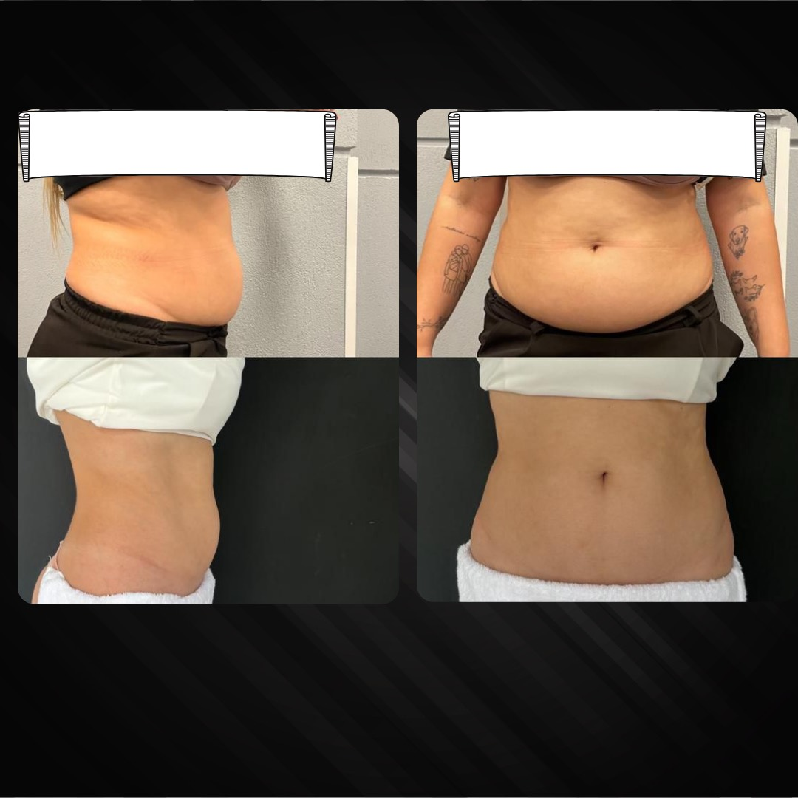

Se a gordura localizada e a flacidez estão te impedindo de usar sua roupa favorita ou aproveitar melhor o dia a dia, o endolaser é o tratamento perfeito para te ajudar! Afinal, ele evita que você precise recorrer à lipoaspiração, se submetendo a um procedimento mais invasivo, com exigência cortes e um longo período de recuperação.
O endolaser é um procedimento realizado por meio de uma tecnologia a laser de diodo. Aplicado por uma
fibra óptica introduzida sob a pele, é um dos principais procedimentos para tratar gordura localizada e
flacidez.
Ele serve como uma forma de tratamento para redução de medidas, flacidez e recuperação da sustentação da
pele.
O laser de diodo causa um aquecimento controlado que, por sua vez, causa a retração imediata do tecido
cutâneo, gerando a reparação tecidual e a remodelação das camadas mais profundas e superficiais da pele,
estimulando novas fibras de colágeno.
Além do tratamento corporal, o endolaser também pode ser aplicado na face. Confira nosso artigo sobre o
assunto.
